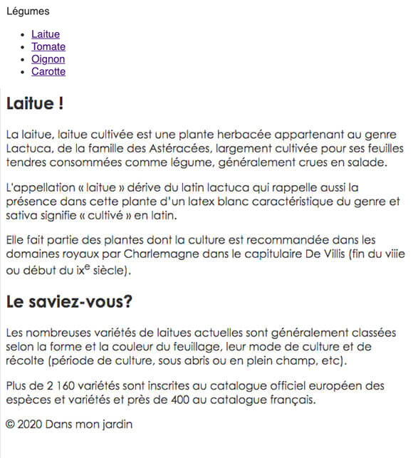
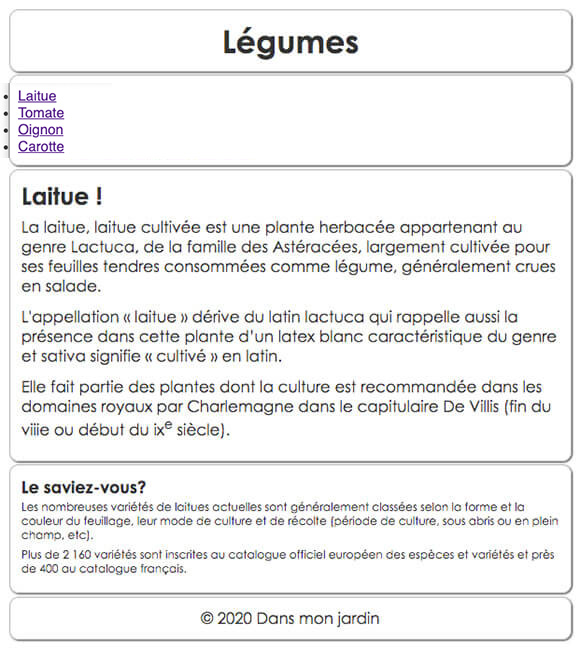
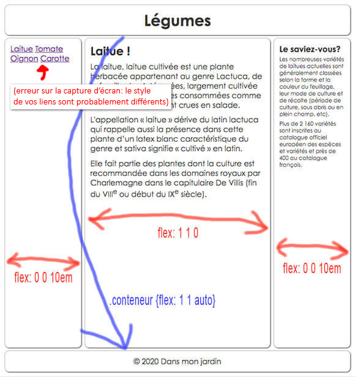
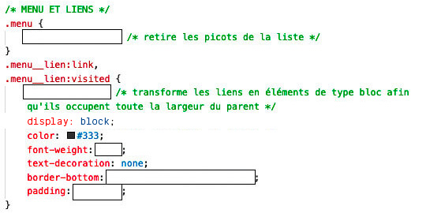

L'annotation BEM et les boites flexibles (la suite)
Quelques propriétés CSS utiles
Les CSS3 ont amené un cortège de nouvelles propriétés aujourd'hui très utilisées. La plupart de ses propriétés sont fonctionnelles dans les navigateurs les plus récents, mais il y a des exceptions.
La déclaration raccourcie border-radius:32px produit des coins arrondis avec un rayon de 32 pixels. Elle est l'équivalent de ces quatres déclarations longues :
Grâce à un choix judicieux de valeur pour width, height et border-radius, cette propriété permet de créer des formes personnalisées, comme, par exemple, un cercle :
Les valeurs associées à la propriété box-shadow dans la déclaration box-shadow: 5px 5px 12px 3px #999; contrôlent respectivement les paramètres suivants de l'ombre:
5px : décalage vers la droite (valeur négative vers la gauche)
5px : décalage vers le bas (valeur négative vers le haut)
12px : niveau de flou
3px : étendue de l'ombre vers l'extérieur
#999 : couleur de l'ombre
En supprimant les décalages en x et en y, cette propriété permet d'obtenir une sorte de lueur qui fait tout le tour de la boîte comme le montre l'exemple suivant :
Par défaut, l'ombre est projetée vers l'extérieur comme le montre les exemples précédents. La valeur inset permet de simuler une ombre qui se projète plutôt vers l'intérieur :
Notez bien que pour produire l'effet d'incrustation, un choix judicieux de valeurs pour les propriétés color (couleur des caractères) et background-color (couleur de l'arrière-plan) est important car la valeur "inset" n'existe pas pour text-shadow.
Transparence (d'un élément HTML) : opacity
Nom de la propriété standard : opacity
Syntaxe
opacity: nombre(0-1)|intitial|inherit;
L'opacité d'un élément HTML (et son contenu) est contrôlée par la propriété opacity.
La propriété opacity permet d'attribuer un certain degré d'opacité (et donc de transparence) à un élément HTML et son contenu, quel que soit cet élément. L'exemple suivant montre l'application successive d'une opacité de 100% (1), 60% (0.6), 30% (0.3) et 10% (0.1) à l'élément div :
Le format de couleur rgba permet d'obtenir une couleur d'arrière-plan semi-transparente pour n'importe quel élément HTML.
À la différence de la propriété 'opacity', ce n'est que la couleur d'arrière-plan qui est touchée dans l'exemple suivant. Le contenu demeure 100% opaque.
L'exemple de code suivant permet d'obtenir la couleur vert avec 50 % d'opacité :
Code
p {
background-color: rgba(0, 255, 0, 0.5)
}
Le même effet peut être obtenu par le format de couleur hsla :
Code
p {
background-color: hsla(120, 100%, 50%, 0.5)
}
Le format hsla signifie Hue (teinte), Saturation, Lightness (luminosité) et Alpha (transparence). La première valeur demande un nombre entre 0 et 359 (pour déterminer la teinte en degrés). Les deux valeurs suivantes indiquent en pourcentage le taux de saturation et de luminosité de la teinte choisie. La dernière représente l'opacité.
L'exemple suivant présente différentes valeur d'opacité de la même couleur d'arrière-plan :
L'exemple suivant met en parallèle la propriété opacity et le conteneur rgba. Notez que la propriété opacity agit à la fois sur le contenu et l'arrière-plan alors que le conteneur rgba n'agit que sur l'arrière-plan :
Le modèle de boîte CSS par défaut est parfois frustrant pour le développeur. En effet, si on déclare une largeur de 200 pixels et une marge interne (padding) de 20 pixels, cet élément aura dans les faits une largeur totale de 240 pixels. Ce n'est pas un problème en soi jusqu'au moment où l'on doive changer la marge interne: il faut alors recalculer la largeur, et éventuellement les valeurs de marge externe et de bordure.
La propriété CSS3 box-sizing avec la valeur border-box permet d'inclure dans la largeur (width) les valeurs de marge interne (padding) et de bordure (border). Sa valeur par défaut est content-box, soit le modèle de boîte courant.
L'exemple suivant montre une comparaison entre deux éléments comportant les mêmes valeurs de width, padding et border, mais dont la valeur de box-sizing est différente:
La propriété transition permet, pour la propriété visée, de passer d'une valeur à une autre de manière graduelle et selon une vitesse définie. Le déclenchement de la transition peut se faire au chargement de la page ou encore à la suite d'une action comme le survol (hover) ou le clic (target) d'un élément.
Les transitions sur les liens sont courantes. Voici un exemple de transition de couleur appliquée sur un lien :
La propriété transition est en fait composée de quatre sous-propriétés :
transition-delay : détermine le délai en secondes (s) avant le démarrage de la transition ;
transition-duration : détermine la durée de la transtion en secondes (s) ou millisecondes (ms) ;
transition-property : détermine la propriété à animer (valeurs: toutes les noms de propriétés ou le mot-clé all qui permet d'animer plusieurs propriétés à la fois) ;
transition-timing-function : détermine la courbe de vitesse de l'animation (valeurs: ease, linear, ease-in, ease-out, ease-in-out, cubic-bezier(n,n,n,n)).
le délai, non présent dans l'exemple (s ou ms).
Voir aussi la page de W3School consacrée à cette propriété: Transition CSS3
Seuls les éléments de type bloc seront affectés par transform. Pour qu'un hyperlien (<a>) soit affecté il faut donc lui ajouter la déclaration display:block.
La propriété transform permet des transformations, des déplacements (translate), des rotations (rotate), des déformations (skew), des changements de taille (scale).
Voici un exemple avec la fonction 'rotate' où la valeur '9deg' produit une rotation positive de neuf degrés :
Code
.transform {
transform: rotate(9deg);
}
Il est possible de jumeler cette propriété à la propriété transition pour créer des animations fluides au survol par exemple.
Il est possible de jumeler plusieurs types de transformations dans la même déclaration, comme rotate et scale dans l'exemple suivant :
Dans l'exemple suivant, les deux cercles s'animent au survol: le premier sans transition et le second, avec. L'animation du second cercle dure une seconde: cela permet de rendre plus évident les effets d'accélération et de décélération engendrés par la valeur ease :
Utilisation de la valeur repeat en arrière-plan d'un paragraphe :
Exemple
Ce paragraphe est tapissé d'image d'arrière-plan qui rendent la lecture hasardeuse, sinon impossible. Pourquoi en est-il ainsi, quand on pourrait faire autrement? Ce paragraphe est tapissé d'image d'arrière-plan qui rendent la lecture hasardeuse, sinon impossible. Pourquoi en est-il ainsi, quand on pourrait faire autrement?
Utilisation de la valeur no-repeat :
Exemple
Ce paragraphe est tapissé d'image d'arrière-plan qui rendent la lecture hasardeuse, sinon impossible. Pourquoi en est-il ainsi, quand on pourrait faire autrement? Ce paragraphe est tapissé d'image d'arrière-plan qui rendent la lecture hasardeuse, sinon impossible. Pourquoi en est-il ainsi, quand on pourrait faire autrement?
Utilisation de la valeur repeat-x :
Exemple
Ce paragraphe est tapissé d'image d'arrière-plan qui rendent la lecture hasardeuse, sinon impossible. Pourquoi en est-il ainsi, quand on pourrait faire autrement? Ce paragraphe est tapissé d'image d'arrière-plan qui rendent la lecture hasardeuse, sinon impossible. Pourquoi en est-il ainsi, quand on pourrait faire autrement?
Utilisation de la valeur repeat-y :
Exemple
Ce paragraphe est tapissé d'image d'arrière-plan qui rendent la lecture hasardeuse, sinon impossible. Pourquoi en est-il ainsi, quand on pourrait faire autrement? Ce paragraphe est tapissé d'image d'arrière-plan qui rendent la lecture hasardeuse, sinon impossible. Pourquoi en est-il ainsi, quand on pourrait faire autrement?
Position d'arrière-plan: background-position
Valeurs:
% : pourcentage (en x et y, à partir du coin supérieur gauche du conteneur parent),
px : distance en pixels (en x et y, à partir du coin supérieur gauche du conteneur parent),
mots-clés (en x: left, center, right; en y: top, middle, bottom), inherit
Valeur initiale: 0 0 (identique à left top)
Syntaxe
background-position: value;
L'utilisation de background-position: 10% 25% donnent ce résultat:
Résultat
Ces valeurs correspondent à un point se trouvant à 10% du bord gauche du paragraphe et à 25% du bord supérieur de ce même paragraphe, comme le montre l'image en arrière-plan affichée ici. Ces valeurs correspondent à un point se trouvant à 10% du bord gauche du paragraphe et à 25% du bord supérieur de ce même paragraphe, comme le montre l'image en arrière-plan affichée ici.
L'utilisation de background-position: 10px 25px donnent ce résultat:
Résultat
Ces valeurs correspondent à un point se trouvant à 10 pixels du bord gauche du paragraphe et à 25 pixels du bord supérieur de ce même paragraphe, comme le montre l'image en arrière-plan affichée ici. Ces valeurs correspondent à un point se trouvant à 10 pixels du bord gauche du paragraphe et à 25 pixels du bord supérieur de ce même paragraphe, comme le montre l'image en arrière-plan affichée ici.
On peut mélanger mots clés et valeurs, comme le montre cet exemple où l'utilisation de background-position: center 15px donne ce résultat:
Résultat
Ces valeurs correspondent à un point centré horizontalement dans le paragraphe et se trouvant à 30 pixels du bord supérieur de ce même paragraphe, comme le montre l'image en arrière-plan affichée ici. Ces valeurs correspondent à un point centré horizontalement dans le paragraphe et se trouvant à 30 pixels du bord supérieur de ce même paragraphe, comme le montre l'image en arrière-plan affichée ici.
Voici un exemple d'utilisation d'images d'arrière-plan multiples (cliquez sur CSS pour voir le code CSS) :
Règles d'utilisation: aucune valeur n'est obligatoire et les valeurs peuvent apparaître dans n'importe quel ordre.
Si deux valeurs sont fournies pour la propriété background-position, elles doivent apparaître ensemble en commençant par la valeur horizontale (x), suivie immédiatement par la valeur verticale (y).
Puisqu'il s'agit d'une propriété abrégée, les valeurs omises seront réinitialisées aux valeurs par défaut des propriétés correspondantes. Par exemple, si on omet de citer les valeurs pour la propriété background-position, ce sont les valeurs 0 0 qui seront implicitement reconnues.
Ajuster la taille de l'arrière-plan : background-size
La propriété background-size permet de modifier la taille de l'arrière-plan au besoin. Bien qu'il soit préférable d'optimiser au préalable la taille des images en fonction de l'usage qu'on en fait, cette propriété est utile dans certains contextes.
[taille] : %, px, etc. Ajuste la largeur et la hauteur de l'image d'arrière-plan. La premières valeur est la largeur, la deuxième, la hauteur. Si une seule valeur est donnée, la deuxième est réglée à "auto" par défaut.
cover : Redéfinit la taille de l'image afin de couvrir l'entièreté de l'arrière-plan du conteneur, même si cela signifie d'agrandir l'image au-delà de sa taille d'origine ou encore d'en couper une partie au besoin.
contain : Red.finit la taille de l'image d'arrière-plan afin qu'elle soit affichée en entier, selon son ratio original.
Expérimentez les propriétés d'arrière-plan (background)
Complétez le code à l'aide de consignes données en classe. L'objectif est de faire afficher, au survol du lien correspondant, le logo de chaque navigateur, ainsi qu'une couleur d'arrière-plan et une couleur de texte personnalisées, comme le montre l'image suivante) :
L'annotation BEM, ou Bloc-Élément-Modificateur, est une méthode qui sert à nommer les classes de manière signifiante.
On peut donner n'importe quel nom aux classes, dans la mesure où celui-ci ne contient ni espaces, ni caractères spéciaux, ou encore, ne commence pas par un chiffre.
Cela dit, si on n'y prête pas attention, la variété des noms de classe peut devenir déroutante dans un site web qui prend une certaine ampleur.
C'est pourquoi il existe des approches qui consistent à mettre de l'ordre dans les noms de classes afin de les rendre signifiants.
L'annotation BEM est l'approche que nous adoptons dans le cadre de ce cours.
Au besoin, le nom du bloc peut être composé de plus d'un mot. Dans ce cas, pour distinguer chaque mot, on utilise la majuscule intercalée (Camel case), comme par exemple titrePrincipal. Il existe d'autres conventions de nomenclature (Kebab case (titre-principal), Snake case (titre_principal)...) : l'important est de choisir une méthode et de s'y tenir.
Élément
bloc__element
La deuxième étape consiste à donner un nom signifiant aux éléments et aux sous-éléments du bloc (quand il y en a).
Contrairement au bloc, l'élément ne peut être réutilisé seul dans une autre section ou une autre page, sans le contexte de son parent bloc.
L'élément est partie constituante du bloc : il ne peut être réutilisé seul, sans le contexte de son bloc parent.
Le nom d'un élément est composé du nom du bloc, suivi de DEUX traits soulignés, puis terminé par le nom spécifique de l'élément (voir l'élément menu__item dans l'exemple suivant) ou du sous-élément (voir l'élément menu__lien dans l'exemple suivant).
Si l'élément comporte lui-même un sous-élément, le nom de ce dernier est construit de la même manière, c'est-à-dire sans l'ajout d'un niveau de nomenclature supplémentaire.
L'exercice 5 a pour objectif d'approfondir vos habiletés dans l'utilisation des boites flexibles ou flexbox et d'introduire l'utilisation d'images d'arrière-plan.
Sources
Téléchargez les fichiers sources à partir de Teams/Devoir.
Documents à remettre
Un dossier rigoureusement nommé comme suit:
groupe du vendredi 8h : gr2_nominitialeprenom_ex5
groupes du vendredi 12h : gr1_nominitialeprenom_ex5
contenant les fichiers et dossiers indiqués ici :
Structure de fichiers :
Structure de fichiers de l'exercice 5
Échéancier
Remettez le dossier complet, zippé, sur Teams/Devoir, dans l'espace prévu à cette fin, au plus tard :
À la fin du cours.
Travail à faire
Renommez le dossier fourni et ouvrez-le dans VSCode.
Le travail consiste monter un gabarit entier à l'aide de flexbox.
Dans le dossier css, créez un nouveau fichier nommé styles.css.
À l'aide de l'élément link habituel, liez les quatre pages HTML à la feuille de style externe.
Débutez la rédaction de la feuille de style par l'encodage de caractères :
Vérifiez le travail en cours de route :
Et poursuivez en inscrivant la charte graphique à la racine, comme ceci :
Vérifiez le travail en cours de route :

Rédigez maintenant la règle de style de réinitialisation :
Vérifiez le travail en cours de route :
Avant de débuter la formation des boites flexibles, vous allez inscrire quelques règles afin de décorer les conteneurs et de bien les distinguer en ajoutant les règles suivantes :
Vérifiez le travail en cours de route :

La classe page est attribuée à un élément neutre div afin de contrôler l'alignement des conteneurs principaux. Vous utiliserez le sélecteur .page pour créer un premier conteneur flex, ce qui transformera ses enfants, soit .header-principal, .conteneur et .footer-principal, en flex-items :
Transformez également l'élément div entourant la zone de contenu en conteneur flex à l'aide du sélecteur .conteneur :
Ajustez le comportement des flex-items du flex-container .conteneur :
Vérifiez le résultat :
À l'aide de requêtes média, ajoutez maintenant ces règles conditionnelles sous chacune des règles mères correspondantes; elles permettent de disposer les flex-items de .conteneur à l'horizontal à partir d'une largeur d'écran de 700px : Sous la règle .conteneur {...}Sous la règle .nav, .contenu-secondaire {...}Sous la règle .contenu-principal {...}
Vérifiez le résultat en écran large :
Résultat affiché sur écran large

Amorcez maintenant la mise en forme des liens de la navigation principale par les états :link et :visited :

Vérifiez le résultat :
Ensuite, vous allez créer l'effet au survol (:hover) et au clic (:active) des liens. Modifiez la couleur du texte (color) et faites apparaître une image en arrière-plan (background-image), comme ceci :
Vérifiez le résultat. Au survol du lien, on devrait voir ceci :
On ne voit qu'une petite partie de l'image de laitue. Pour la voir au complet dans l'espace du lien, ajustez ses paramètres en modifiant sa position (background-position), sa répétition (background-repeat) et sa taille (background-size).
Vérifiez le résultat. Au survol du lien, l'image devrait maintenant être visible au complet :
C'est réussi, mais vous avez reproduit le même effet pour les quatre liens. Personnalisez les effets pour chacun des liens en utilsant correctement le sélecteur :nth-child(n) avec les classes appropriées (voir le travail formatif réalisé en classe comme référence pour l'utilisation de :nth-child avec une classe).
Pour chacun des liens, ajustez la couleur du texte et associez la bonne image de légume afin d'obtenir un résultat semblable à ceci :
Vous allez maintenant modifier le code HTML pour ajouter une image et sa légende dans le texte, soit juste sous l'élément h1 du contenu principal. Vérifiez le résultat :
Ajout d'une image et sa légende dans le texte.
Faites flotter l'image dans le texte et ajustez la taille de la légende pour obtenir un résultat semblable à ceci :
En mode étroitEn mode large
Ajoutez le code HTML de l'image dans toutes les pages, tout en ajustant l'adresse pour faire afficher l'image correspondante :
N'oubliez pas de vérifier la réactivité de votre page en utilisant les outils de l'inspecteur de Google Chrome !